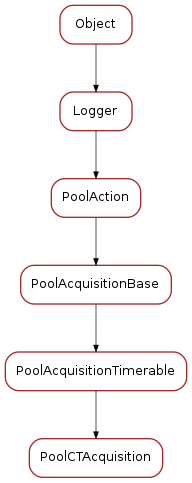

poolacquisition¶
This module is part of the Python Pool library. It defines the class for an acquisition
Classes
PoolCTAcquisition¶

-
class
PoolCTAcquisition(main_element, name='CTAcquisition', slaves=None)[source]¶ Bases:
sardana.pool.poolacquisition.PoolAcquisitionTimerable..todo:: remove it, still used by pseudo counter
-
in_acquisition(states)[source]¶ Determines if we are in acquisition or if the acquisition has ended based on the current unit trigger modes and states returned by the controller(s)
- Parameters
states (dict<PoolElement, State>) – a map containing state information as returned by read_state_info
- Returns
returns True if in acquisition or False otherwise
- Return type
-